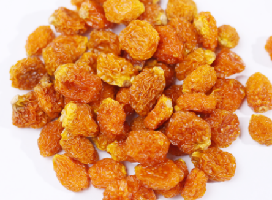
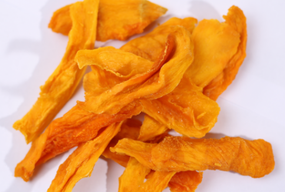
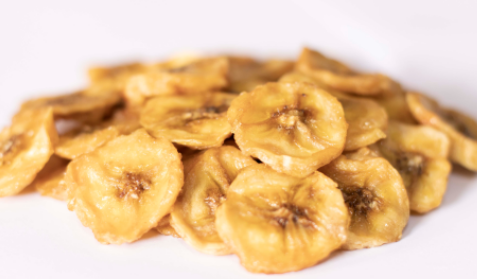
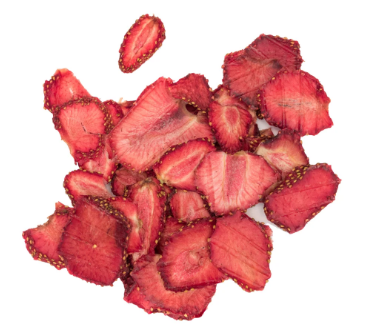
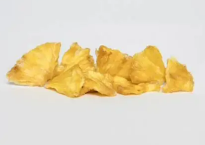

Transformamos superalimentos mediante procesos que buscan preservar sus propiedades naturales y alto valor nutricional, garantizando en cada etapa su calidad e inocuidad.

Superfruta andina con sabor agridulce y aroma frutal. Fuente natural de vitamina C, vitamina A, fibra y antioxidantes para fortalecer el sistema inmunológico y la salud visual.

Fruta tropical de sabor dulce y aroma intenso. Rica en vitamina C, vitamina A, fibra y compuestos antioxidantes que protegen las células frente al estrés oxidativo.

Dulce, nutritivo y de aroma agradable. Rico en potasio, vitaminas B6 y C y fibra. Promueve la energía corporal y el correcto funcionamiento del sistema muscular y nervioso.

Sabor dulce y ligeramente ácido con aroma fresco. Excelente fuente de vitamina C, potasio y fibra, aportando al adecuado funcionamiento digestivo e inmune.

Sabor dulce con agradable toque ácido y aroma tropical intenso. Fuente de vitamina C, fibra y manganeso, ideal para el bienestar digestivo y las defensas corporales.
Respaldamos la producción de alimentos orgánicos de alta calidad cumpliendo con estándares internacionales que aseguran procesos responsables, inocuos y de comercio justo.